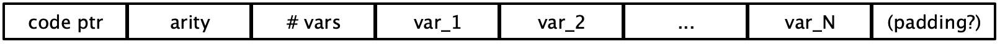

Assignment 8: Egg-eater: Arrays
Due: Tue 11/30 at 9pm
git clone
In this assignment you’ll extend to implement mutable arrays, which are sort like eggs lain in the heap, if you don’t think about it too much...
1 Language and Requirements
Egg-eater starts with the same semantics as Diamondback, and adds support for
array expressions: creating values, accessing components, and mutating components
sequencing of expressions
richer binding syntax
The runtime system must add support for
Allocating values on the heap
Printing array values
Comparing array values for structural equality
This is a large assignment, and its pieces are tightly interconnected. Read through the whole assignment below carefully, then take note of the recommended TODO list at the bottom for a suggested order to tackle these pieces.
2 Syntax Additions and Semantics
The main addition in Egg-eater is array expressions, along with
accessor expressions for getting or setting the contents of arrays, a
unary primitive for checking if a value is an array, and a unary
primitive for getting the length of an array. Array expressions are a
series of zero or more comma-separated expressions enclosed in
(square) brackets. An array access expression is one expression
followed by another enclosed in square brakcets, which expresses which
field to be accessed. isarray is a primitive (like
isnum and isbool) that checks if a value is an
array. Finally, length is a primitive that produces the
length of an array.
‹expr› ... let ‹binds› in ‹expr› ‹array› ‹expr› [ ‹expr› ] ‹expr› [ ‹expr› ] := ‹expr› ‹expr› ; ‹expr› isarray ( ‹expr› ) length ( ‹expr› ) ‹exprs› ‹expr› ‹expr› , ‹exprs› ‹array› [ ] [ ‹exprs› ] ‹destruct› IDENTIFIER [ ] [ ‹destructs› ] ‹destructs› ‹destruct› ‹destructs› , ‹destruct› ‹binds› ‹destruct› = ‹expr› ‹destruct› = ‹expr› , ‹binds›
For example, we can create three arrays and access their fields:
let unit = [] in
let one = [1] in
let three = [3, 4, 5] in
three[0]An array-set expression evaluates both arguments, updates the array at the appropriate index, and returns the entire tuple value as its result. We can therefore chain array-set expressions together, and write
let three = [0, 0, 0] in
((three[0] := 1)[1] := 2)[2] := 3
let pair = [0, 0] in
pair[0] := (three[1] := 10)three will be [1,10,3] and pair will be [three, 0]All of the same errors possible in array-get are possible in array-set and you should print a message that includes the same relevant string.
We can also actively destructure arrays when we bind them:
let t = [3, [[4, true], 5]] in
let [x, [y, z]] = t
x + y[0] + zx is bound to 3, y
is bound to [4, true] and z is bound to
5.Your check_prog function should ensure that
all variables in the same destructing let are distinct and raise a
DuplicateBinding error otherwise.
In the Exp datatype, these are represented as:
enum Exp<Ann> {
...
Array(Vec<Exp<Ann>>, Ann),
ArraySet {
array: Box<Exp<Ann>>,
index: Box<Exp<Ann>>,
new_value: Box<Exp<Ann>>,
ann: Ann,
},
Semicolon {
e1: Box<Exp<Ann>>,
e2: Box<Exp<Ann>>,
ann: Ann,
},
AssertSize(Box<Exp<Ann>>, usize, Ann),
}
enum Prim1 {
...
IsArray,
Length,
}
enum Prim2 {
...
ArrayGet,
}This includes an additional form which is purely internal to the
compiler: AssertSize, which asserts that an array has a given
length. This is used in the compilation of destructuring let.
In Sequential form, these expressions are represented as SeqExps, with ImmExp
components:
enum SeqExp<Ann> {
...
AssertSize(ImmExp, usize, Ann),
Array(Vec<ImmExp>, Ann),
ArraySet {
array: ImmExp,
index: ImmExp,
new_value: ImmExp,
ann: Ann,
},
}Note that these expressions are all SeqExps, and not
ImmExps – the allocation of an array counts as a “step” of execution,
and so they are not themselves already values.
To make the bindings work in our AST, we need to enhance our representation of binding positions:
enum BindExp<Ann> {
Var(String, Ann),
Arr(Vec<BindExp<Ann>>, Ann),
}
enum Exp<Ann> {
...
Let {
bindings: Vec<(BindExp<Ann>, Exp<Ann>)>,
body: Box<Exp<Ann>>,
ann: Ann,
},
}Let-bindings now can take an arbitrary, deeply-structured binding, rather than
just simple names. Further, because we have mutation of arrays, these act more
like statements than expressions, and so we may need to sequence multiple
expressions together. Further still, sequencing of expressions acts just like
let-binding the first expression and then ignoring its result, before executing
the second expression. In other words, e1 ; e2 means the same
thing as let DONT_CARE = e1 in e2 where DONT_CARE is a variable distinct from all others in the program.
To keep things simple, we will only allow these new binding forms in let bindings and not in function parameters.
3 Desugaring away unnecessary complexity
The introduction of destructuring let-bindings and sequencing make the rest of compliation complicated. sequentialization, stack-slot allocation, and compilation all are affected. We can translate this mess away, though, and avoid dealing with it further.
Nested let-bindings: Given a binding
let [b1, b2, ..., bn] = e in bodywe can replace this entire expression with the simpler but more verbose
let temp_name1 = e,
DONT_CARE = assertSize(e, n)
b1 = temp_name1[0],
b2 = temp_name1[1],
...,
bn = temp_name1[n-1]
in bodywhere assertSize is pseudo-syntax for our internal
assertSize form that ensures that the array has the given length.
(Note that the (n-1) in the last binding is not a literal subtraction
expression, but a compile-time constant literal integer, deduced solely from
the length of the original binding expression.)
length(e) should evaluate its argument and return its
length if it is an array. If the input is not an array it should
display an error with the message "length called with
non-array".
Sequences:
You should implement a desugar phase of the compiler, which runs somewhere
early in the pipeline and which makes subsequent phases easier, by implementing
the translations described in this section.
Think carefully about (1) when to desguar
relative to the other phases in the compiler, and (2) what syntactic
invariants each phase of your compiler expects. You may want to enforce those
invariants by panic!ing if they’re violated.
4 Semantics and Representation of Arrays
4.1 Array Heap Layout
Array expressions should evaluate their sub-expressions in order from left to right, and store the resulting values on the heap. We discussed several possible representations in class for laying out arrays on the heap; the one you should use for this assignment is:

That is, one word is used to store the count of the number of elements in the array, and the subsequent words are used to store the values themselves. Note that the count is an actual integer; it is not an encoded Egg-eater integer value.
An array value is stored in variables and registers as the address of the
first word in the array’s memory, but with an additional 1 added to the value
to act as a tag. So, for example, if the start address of the above memory
were 0x0adadad0, the array value would be 0x0adadad1. With this change, we
extend the set of tag bits to the following:
Numbers:
0in the least significant bitBooleans:
111in the three least significant bitsArrays:
001in the three least significant bits
Visualized differently, the value layout is:
Bit pattern |
| Value type |
|
| Number |
|
| True |
|
| False |
|
| Tuple |
Where W is a “wildcard” 16-bit nibble and b is a “wildcard” bit.
4.2 Accessing Array Contents
In an array access expression, like
let t = [6, 7, 8, 9] in t[1]The behavior should be:
Evaluate the expression in array position (before the brackets), then the index expression (the one inside the brackets).
Check that the array position’s value is actually an array, and signal an error containing
"indexed into non-array"if not.Check that the indexing expression is a number. Signal an error containing
"index not a number"if not.Check that the index number is a valid index for the array value —
that is, it is between 0and the stored number of elements in the array minus one. Signal an error containing"index out of bounds"Evaluate to the array element at the specified index.
You can do this with just rax, but it causes some
pain. Feel free to use as scratch registers r13 and r14 as
needed (for example saving the index in r14 and using rax
to store the address of the tuple). This can save a number of
instructions. Note that we will generate code that doesn’t need to
use r13 or r14 beyond the extent of this one expression,
so there is no need to worry about saving or restoring the old value
from r14 except in the compilation of the main expression.
You also may want to use an extended syntax for mov in order to combine these
values for lookup. For example, this kind of arithmetic is allowed inside
mov instructions:
mov rax, [rax + r14 * 8 + 8]This would access the memory at the location of rax, offset by
the value of r14 * 8 + 8. So if the value in r14 were,
say 2, this may be part of a scheme for accessing the second
element of a tuple. To aid in this we have generalized the
MemRef type to allow for these dynamically computed offsets:
struct MemRef {
reg: Reg,
offset: Offset,
}
enum Offset {
Constant(i32),
Computed { // reg * factor + constant
reg: Reg,
factor: i32,
constant: i32,
},
}Neither R14 nor anything beyond the typical
Offset::Constant is required to make this work, but you
may find it simpler to compile using these.
4.3 General Heap Layout
The register r15 has been designated as the heap pointer. The
provided stub.rs has a large global HEAP array and
passes a pointer to the resulting address as an argument to
start_here. The support code provided fetches this value (as a
traditional argument), and stores it in R15. It is up to your
code to ensure that the value of R15 is always the address of
the next block of free space (in increasing address order) in the
provided block of memory.
4.4 Interaction with Existing Features
Any time we add a new feature to a language, we need to consider its interactions with all the existing features. In the case of Egg-eater, that means considering:
If expressions
Function calls and definitions
Tuples in binary and unary operators
Let bindings
Typing rules
We’ll take them one at a time.
If expressions: Since we’ve decided to only allow booleans in conditional position, we simply need to make sure our existing checks for boolean-tagged values in if continue to work for tuples.
Function calls and definitions: Tuple values behave just like other values when passed to and returned from functions —
the tuple value is just a (tagged) address that takes up a single word. Tuples in let bindings: As with function calls and returns, tuple values take up a single word and act just like other values in let bindings.
Tuples in binary operators: The arithmetic expressions should continue to only allow numbers, and signal errors on tuple values. There is one binary operator that doesn’t check its types, however:
==. We need to decide what the behavior of==is on two tuple values. Note that we have a (rather important) choice here. Clearly, this program should evaluate totrue:let t = [4, 5] in t == tHowever, we need to decide if
[4,5] == [4,5]should evaluate to
trueorfalse. That is, do we check if the array addresses are the same to determine equality, or if the array contents are the same. For this assignment, to get some practice traversing the heap, we will take the latter approach, which requires a traversal of the arrays. Rather than write this in assembly, you should make a new function instub.rsto help you. Your implementation does not need to be robust in the presence of cycles in the heap or overflowing the Rust stack.To help you working with raw bytes in Rust, we have provided a function
load_snake_arraythat takes a pointer to an array in the heap and "parses" it into a struct consisting of a size and a pointer to the first element of the array. You can then access the other elements of the array by using the.add(n)method on pointers. You will need to useunsafecode to implement this, of course.Tuples in unary operators: The behavior of the unary operators is straightforward, with the exception that we need to implement
printfor tuples. We could just print the address, but that would be somewhat unsatisfying. Instead, we should recursively print the tuple contents, so that the programprint([4, [true, 3]])actually prints the string
"[4, [true, 3]]". This will require some additional work with pointers instub.rs. A useful hint is to create a recursive helper function forsprint_snake_valthat traverses the nested structure of tuples and prints single values. Again,printshould work properly for all acyclic tuples of reasonable depth, but does not have to be robust in the presence of cycles or overflowing the Rust stack.
5 Recommended TODO List
To start, get your compiler pipeline working on your old test cases by putting
panic!in any spot that uses a new feature such as an array or a complexlet.Extend your sequentialization function to handle the
Array,ArraySetcases. These should be similar to the cases you’ve implemented before.Get array creation and access/set working for arrays containing two elements, testing as you go. This is very similar to the pairs code from lecture.
Implement the new the unary operators to handle arrays appropriately and update old primitives if necessary to accomodate arrays (it may be useful to make version of
printand==that simply print the address and compare addresses before implementing the full version). Test as you go.Make tuple creation and access/set work for tuples of any size. Test as you go.
Tackle
printfor tuples if you haven’t already. Test as you go.Tackle
==for tuples as a function in Rust. Test as you go. Implementing print first should helpTry implementing an interesting test cases using lists, binary trees or another interesting recursive datatypes in Egg-eater. Include one of these examples as
interesting.eggin theexamples/directory.
6 List of Deliverables
your
compile.rsandasm.rsthe other src/*.rs files in the starter code
any additional modules you saw fit to write
your
runtime/stub.rsthe Cargo.toml
integration tests (
tests/examples.rs)your test input programs (
examples/*.eggfiles)
Again, please ensure cargo builds your code properly.
The autograder will give you an automatic 0 if they cannot compile your code!
7 Grading Standards
For this assignment, you will be graded on
Whether your code implements the specification (functional correctness),
the comprehensiveness of your test coverage
8 Submission
Wait! Please read the assignment again and verify that you have not forgotten anything!
Please submit your homework to gradescope by the above deadline.